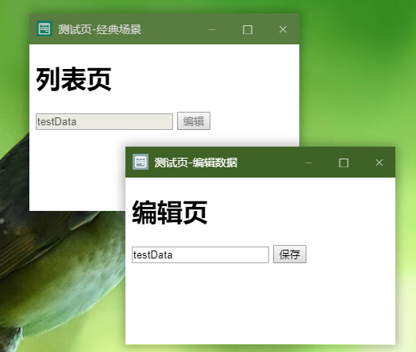

cb fucntion 回调函数
完成基本通信对接后触发的回调。任何涉及到窗体通信和窗体主动调用的API都应该放在cb处。
YLApp 属性，string类型， 只读；
当前窗体的id，由YLUI随机分配，在YLApp.onReady有效时被初始化。
cb fucntion 回调函数
接受到YLUI事件时触发，cb为事件处理函数。
YLApp.onEvent(function (msg) {
console.log(msg)
});
示例中，msg是一个对象，主要包含了以下几个属性
| 属性名 | 类型 | 描述 |
|---|---|---|
| event | string | 事件名 |
| data | mixed | 事件数据，一般是js对象 |
| from | string | 事件发送来源的id |
| sameOrigin | bool | 发送方与本窗体是否同源（同源有更高的可信度） |
| target | array | 事件传播目标窗体的id集合 |
event string 事件名
data mixed 数据
target string|array|true 广播对象
发送一个事件。其中。如果target是string类型，表示发送给对应id的窗口；如果target是数组，表示发送给数组中所有id对应的窗体；如果target为true，表示发送给所有窗体。
特别的，YLUI主体的id为0。
借助于onEvent事件监听和emit事件发送，窗体和其他窗体、窗体和YLUI主体都直接可以实现实时通讯，且这种通讯是跨域的、可定向的。这就意味着你可以开发出工具类窗口（如系统自带的APP取色器），和父子联动式窗口。
以一个经典业务场景为例：一些产品信息需要被编辑，用户首先进入的是产品列表，然后点击其中的某一项产品去编辑信息。
在一般的单页布局界面中，这种操作需要用户（或系统自动的）在列表页、详情页、编辑页之间跳转。
而多选项卡布局就好得多了，列表页只需要打开一次，通过新建选项卡来编辑各个产品信息。
对于YLUI，我们有更优雅的解决方案。以列表页为入口，通过YLApp.open打开产品编辑页，新建出一个子窗口。
打开编辑页时，我们可以通过url传递产品id，也可以通过YLApp的data域来传递（推荐）。
有关data域请参考7.1和7.3 。

在编辑页提交信息后，可以通过事件信息发送“已提交”的信息给列表页（让列表页更新视图），然后窗体API关闭自身。
像极了windows的操作模式，不是吗？